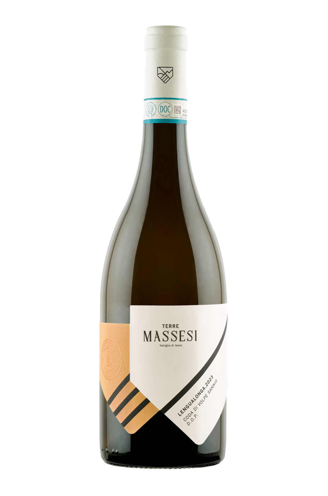
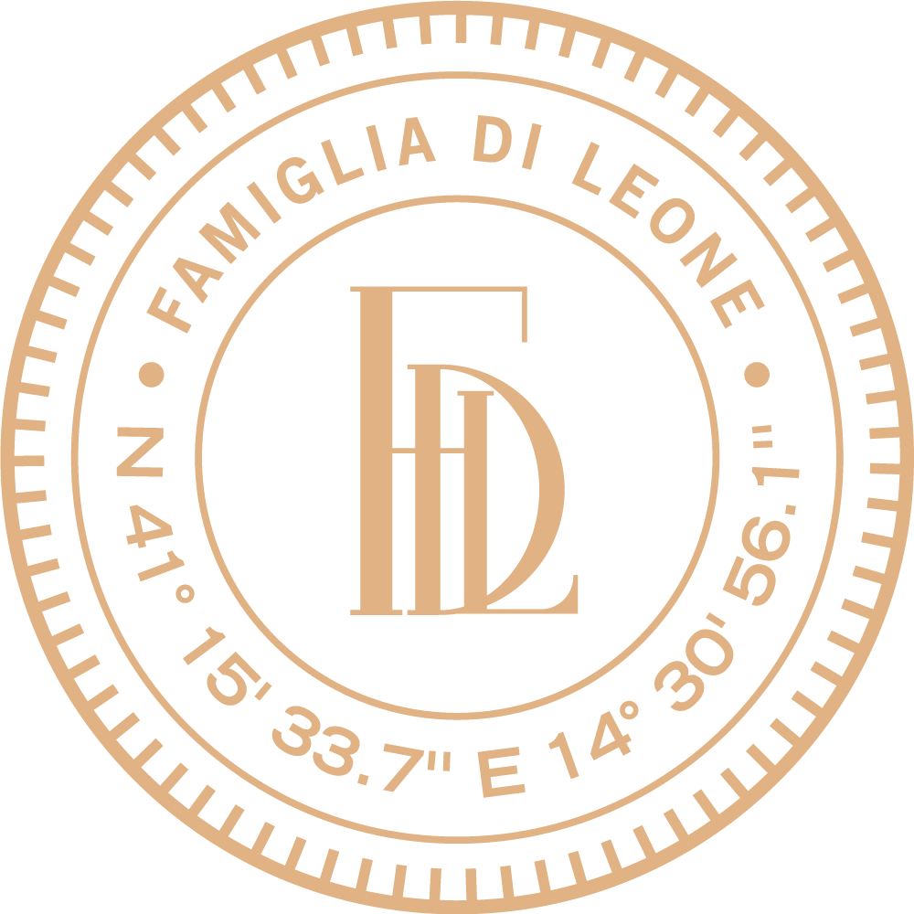
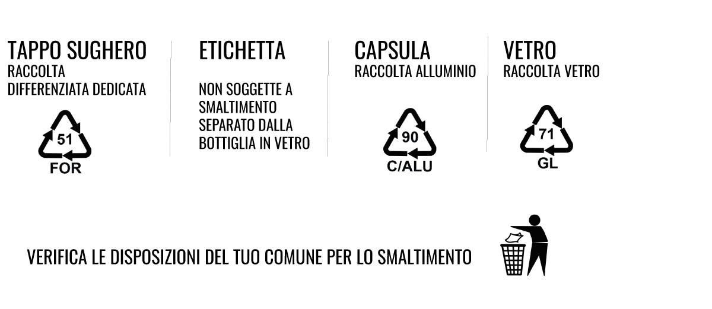
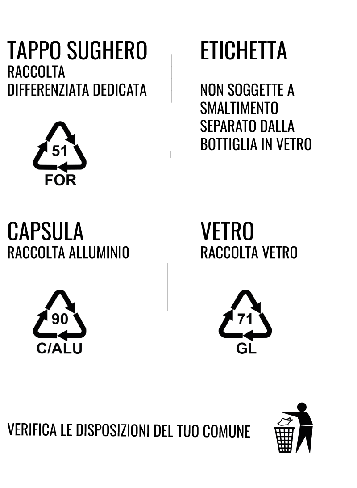

Lengualonga is the authentic reflection of the intimate bond between our winery and the territory. This wine is an anthem to the peasant tradition that, never dormant, expresses itself with strength and character through the homonymous vineyard from which it originates. A dialectal melody that celebrates an indissoluble union between tradition, passion, and the innovation of our wine culture.
Appearance: is a deep straw yellow color
Aroma: is fine and elegant with notes of citrus and ripe yellow-fleshed fruit
Palate: is soft and full-bodied, with moderate freshness and a broad, savory finish

GRAPE VARIETY: Coda di Volpe del Sannio 100%
PRODUCTION AREA: Single vineyard in Sant'Antonio, Massa,
Faicchio
SOIL: Volcanic, tuffaceous matrix
TRAINING SYSTEM: Guyot
VINIFICATION AND AGING: fermentation at controlled temperature, followed by
aging on fine lees for about 8 months
FOOD PAIRINGS: Lengualonga is the ideal wine to pair with first courses based on
mushrooms and second courses of white meats
SERVING TEMPERATURE: 10-12°C

Lengualonga is the authentic reflection of the intimate bond between our winery and the territory. This wine is an anthem to the peasant tradition that, never dormant, expresses itself with strength and character through the homonymous vineyard from which it originates. A dialectal melody that celebrates an indissoluble union between tradition, passion, and the innovation of our wine culture.
Visual: it has a deep straw yellow color
Nose: it is fine and elegant with notes of citrus and ripe yellow-fleshed fruit
Palate: it is soft and full, with moderate freshness and a broad, savory finish
GRAPE VARIETY: Coda di Volpe del Sannio 100%
PRODUCTION AREA: Single vineyard in the locality of Sant'Antonio, fraz. Massa,
Faicchio
SOIL: Volcanic, tuffaceous matrix
TRAINING SYSTEM: Guyot
VINIFICATION AND AGING: controlled temperature fermentation, followed by
aging on the fine lees for about 8 months
FOOD PAIRINGS: Lengualonga is the ideal wine to pair with first courses based on
mushrooms and second courses of white meats
SERVICE TEMPERATURE: 10-12°C
